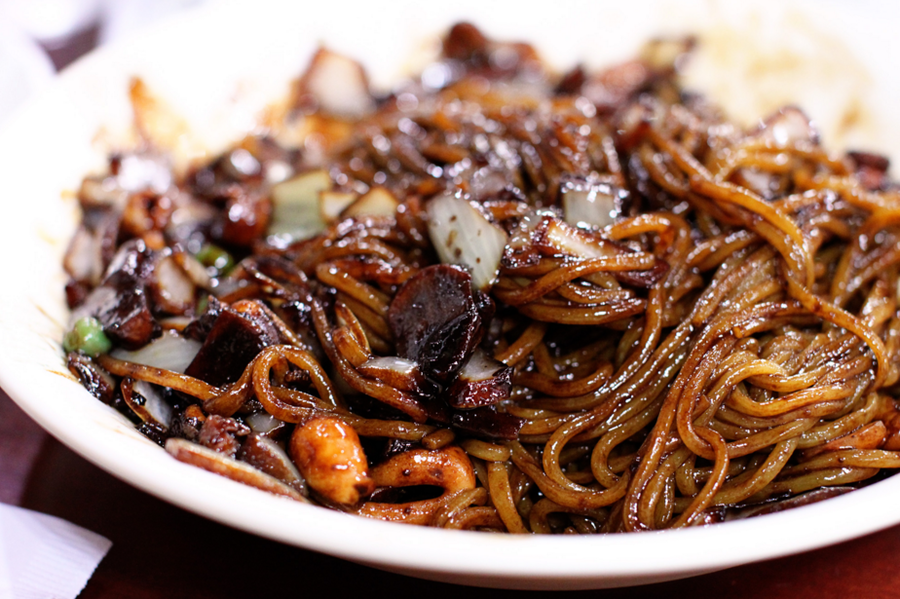

짜장면
재료 : 식용유 2큰술, 다진 마늘 1큰술, 양파 1개,
당근1/4개, 간 돼지고기 한 줌
볶음 춘장 - 식용유 4큰술, 춘장 4큰술
새우 10마리,
청주 1큰술, 소금 약간, 후추 약간
양념 - 볶음 춘장, 굴소스 1큰술, 설탕 1큰술, 간장 1큰술, 물1/2컵~1컵
전분문 - 물 2큰술, 감자 전분1~2큰술
기타 - 먹고 싶은 면 한줌
- 춘장은 식용유와 1:1로 달달 볶은 후 체에 받쳐 기름기를 뺍니다.
- 식용유 두른 팬에 다진 마늘을 볶아 향을 냅니다.
- 나머지 채소와 돼지고기,새우를 청주,소금,후추 뿌려가며 달달 볶습니다/
- 양념을 넣어 달달 볶은 후 물을 약간 부어 끓이다 전분물을 넣어 걸죽하게 만듭니다. 그리고 삶은 면에 곁들입니다.